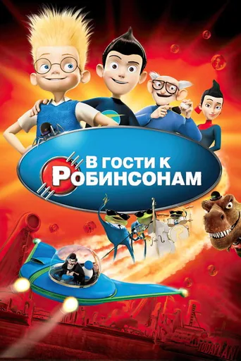

В гости к Робинсонам 2007
Льюис растет без родителей и страстно мечтает найти свою семью. На счастье, у Льюиса неуемное воображение и поразительные способности к изобретению разных фантастических приспособлений. Из разных попавшихся под руку деталей он мастерит устройство для проявки воспоминаний, чтобы увидеть хотя бы лицо своей мамы, которая еще младенцем подбросила его в сиротский приют. Но на школьной выставке, где Льюис должен представить свой сканер памяти в действии, происходит невероятное. Сначала Льюис знакомится со своим ровесником Уилбером, который представляется прилетевшим из будущего сотрудником «Службы контроля времени». А потом еще один пришелец, зловещий тип в черном котелке, похищает изобретение Льюиса и устраивает на выставке полнейший разгром. Чтобы поймать мошенника и вернуть все на свои места, ребята отправятся в будущее, где Льюиса ждет масса захватывающих приключений. Он прокатится на машине времени, подружится с роботом Карлом, поучаствует в схватке со сторожевым динозавром, спасет весь мир от происков злодея и его котелка, а самое главное - познакомится с многочисленной, дружной и взбалмошной семейкой Робинсонов, и найдет в их лице долгожданных родственников.
Открыть в каталогеДанные и постеры принадлежат их правообладателям. Этот продукт использует TMDB API, но не одобрен и не сертифицирован TMDB.